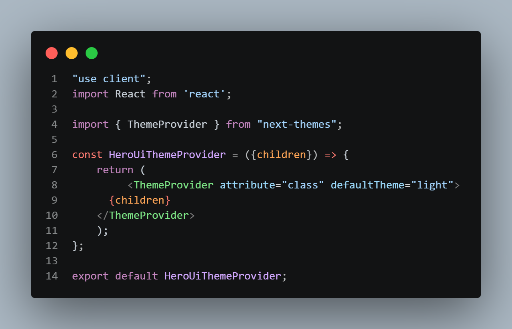
In layout.js --->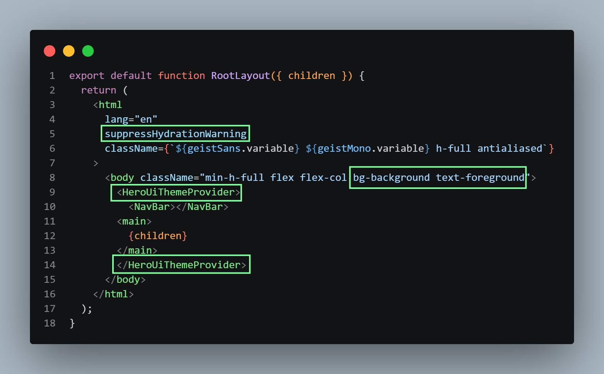
Remove everything from global.css and add this --->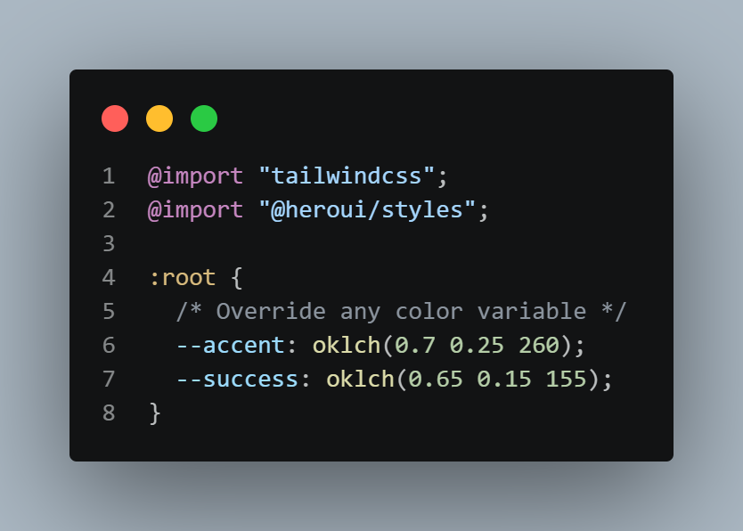
Now in Component folder make this file according to documentation --->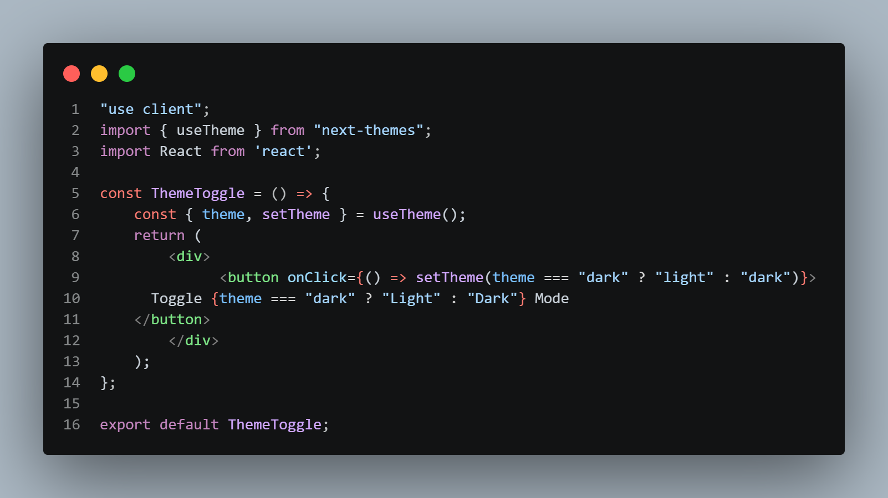
Then we can add this ThemeToggle component in our NavBar. For making a switching effect for theme we can ---> Make sure to install gravity ui icons using npm i @gravity-ui/icons Then search switch in heroui and pick one and paste in for ThemeToggle component -->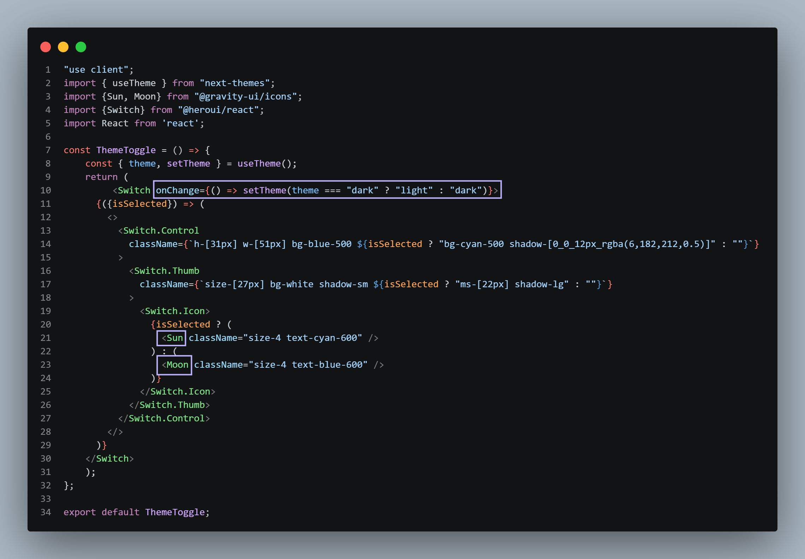
Output: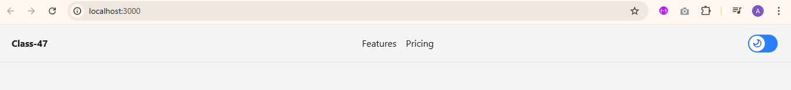
For Server ---> Make folder named data in src and store the json files there Make another folder in src named lib where we will store the js files. Like task.js-->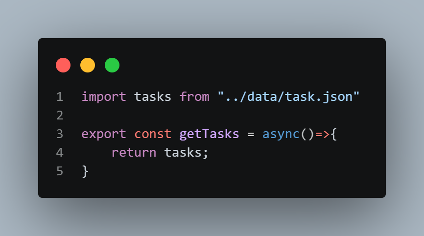
then in the task folder's page.jsx --->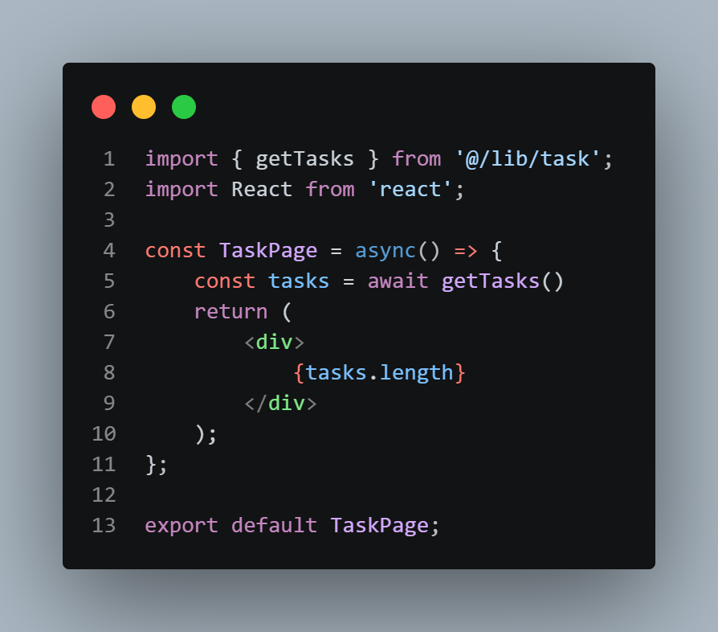
We can create a modal form by creating a AddTask component and placing it in the task folder's page.jsx--->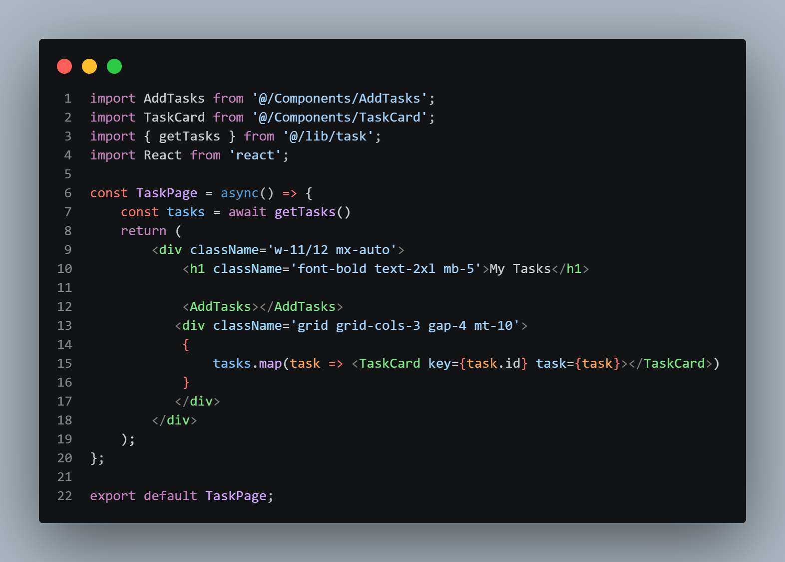
As for the modal, make sure the submit button is in the form tag. Then we can create an actions.js file in the lib folder (doc can be found in Next.js docs Mutating data)-->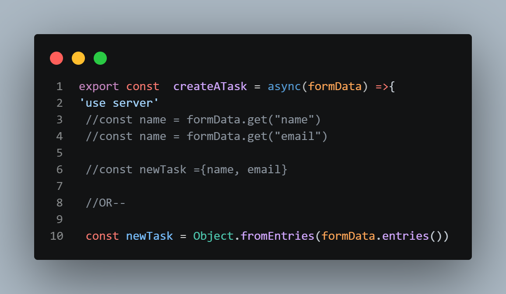
In task folder's page.jsx ---> we pass the createATask component in AddTask component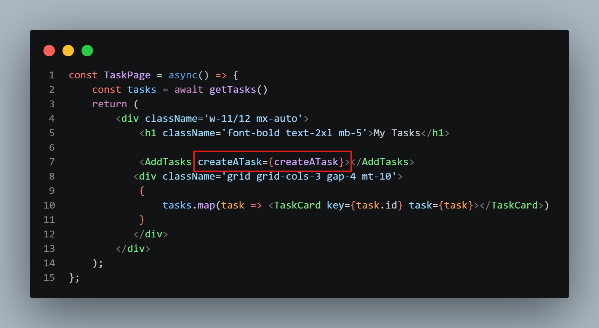
And in AddTask.jsx inside form tag we must have actions={createATask}-->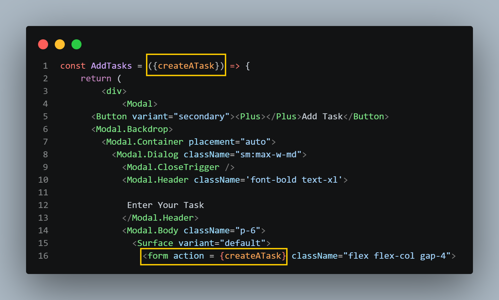
And make sure that the form input filed have name = "title" etc.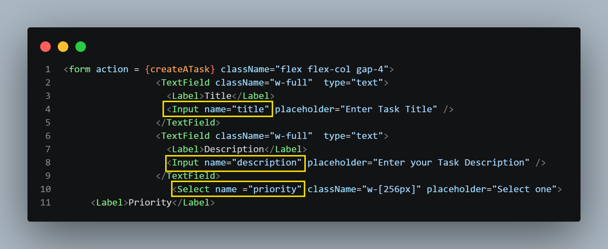
and the submit button must have type ="submit"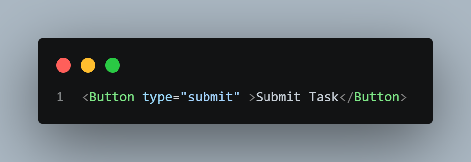
Also to show the card in the task page in task.js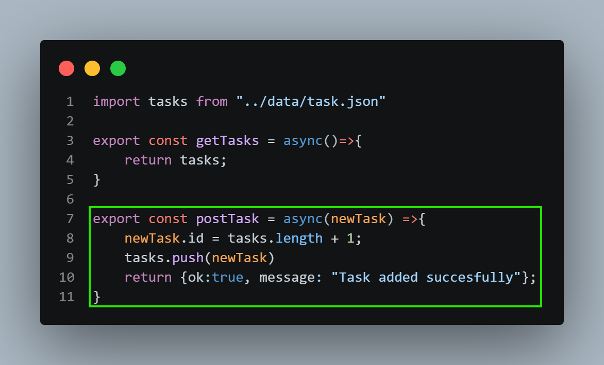
then in action.js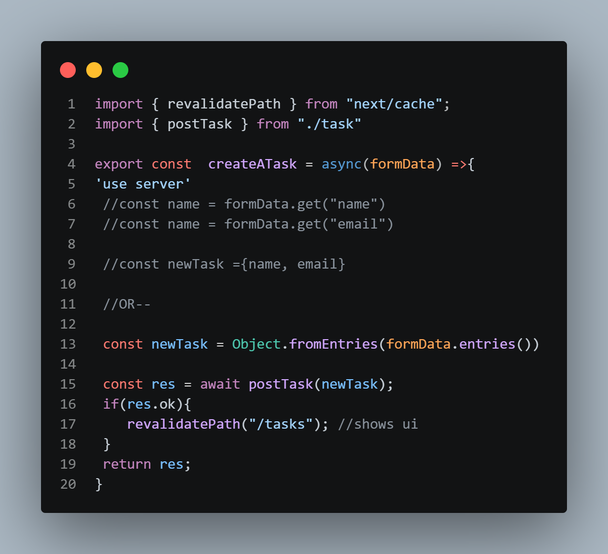
Modal Contact Form